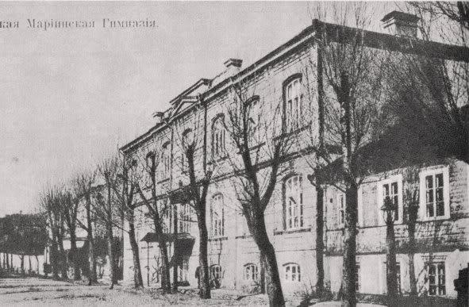
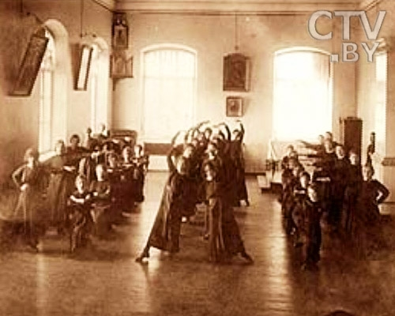
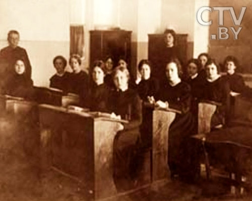
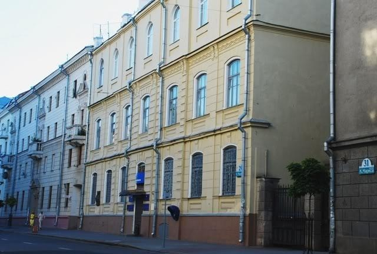

Будынак быў узведзены па вул. Падгорная, 37. Адчынена ў 1899 годзе. Будынак
узведзены сярод ужо існуючай забудовы. Першапачаткова быў двухпавярховым з
цокальным паверхам.
Навучанне складалася з падрыхтоўчага этапа, сямі базавых класаў і восьмага –
педагагічнага. Гімнпзісткі вывучалі: рускую мову і літаратуру, замежныя мовы,
фізіку, закон Божы, маляванне, гімнастыку, спевы, танцы, рукадзелле. Такой была
праграма гімназістак. Кожную раніцу рэверанс выкладчыкам і толькі потым юныя
вучаніцы маглі прыступаць да заняткаў. Сямікласніца ўжо магла выкладаць вучням
малодшай школы, а выпускніца восьмага – смела паступаць на жаночыя курсы. У
1912 годзе гімназію наведвалі 560 вучаніц.
Мінская Марыінская жаночая гімназія была адной з лепшых сярод жаночых
навучальных устаноў таго часу. Тут вучыліся будучая народная артыстка СССР Л.І.
Ржэцкая; В.Н. Пола, якая пазней стала народнай артысткай БССР; Ірма Яўнзен,
выдатнейшая спявачка народных песен, першая ў рэспубліцы заслужаная артыстка
БССР. У гады першай сусветнай вайны гімназія была пераведзена ў г. Прапойск
(Слаўгарад), у 1917 годзе – закрыта. У 20-х – пачатку 30-х гадоў будынак належаў
політэхнікуму, з сярэдзіны 30-х гадоў – Дзяржаўнай карціннай галерэі. Сам будынак
выглядаў крыху інакш – трэці паверх быў дабудаваны ўжо пасля Вялікай Айчыннай
вайны. Да рэканструкцыі будынка ў 2011–2013 гадах тут знаходзілася аўтаматычная
тэлефонная станцыя і музей сувязі, зараз тут месціцца Рэспубліканскае ўнітарнае
прадпрыемства Нацыянальны цэнтр абмену трафікам (вул. К. Маркса, 29).



